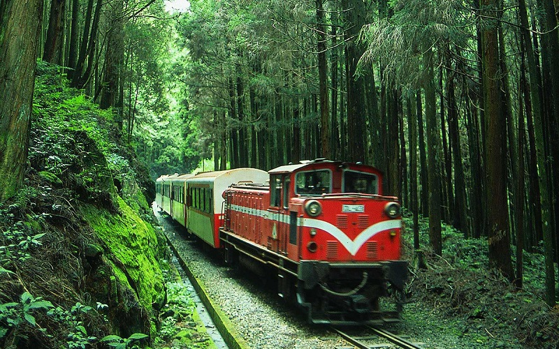
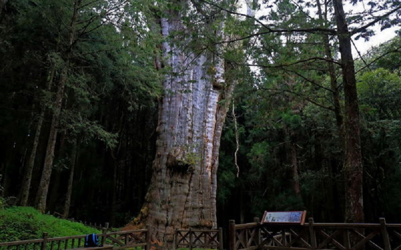
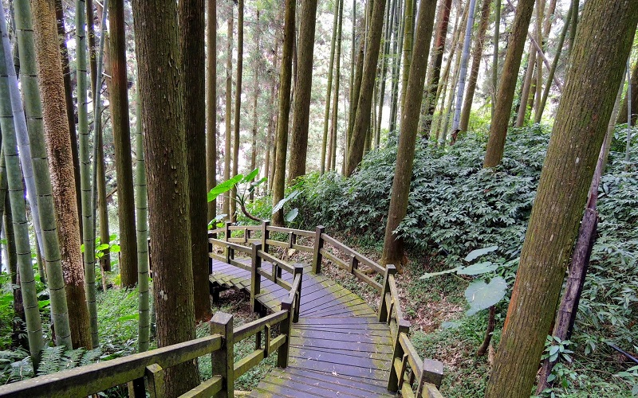
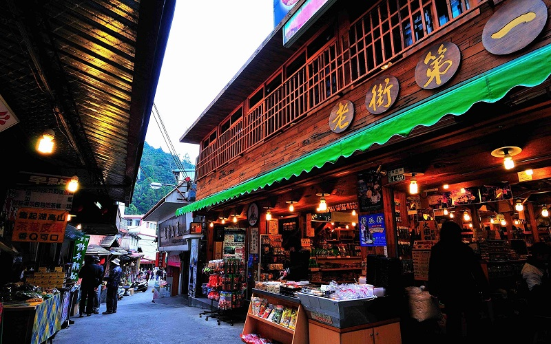
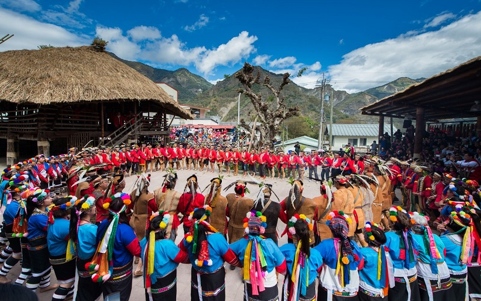

Alishan
Chiayi County
Sunrise and the sea of clouds
    The Alishan area was originally settled by the Tsou tribe of the Taiwanese aborigines and was planned to be
the Alishan National Scenic Area in 2001. During the Japanese rule period, the Japanese goverment constructed the
Alishan Forest Railway from Chiayi City for the convenience of logging the Taiwan Cypress from Alishan.
Nowadays, the railway has become a tourist attraction with its unique Z-shaped switchbacks, over 50 tunnels
and 77 wooden bridges. Alishan is famous for its dazzling sunrise, sea of clouds and the sacred trees. For those who like
hiking and experience the beauty of forests will be interested in Giant Tree Plank Trail. The trial was built in 1998, when
Alishan’s sacred tree fell down naturally and ended its legendary life of more than 3000 years. Fenquhu is a small village
which is route stop of the Alishan Forest Railway. Tourists bounded for Alishan usually drop by for a rest and appreciate
the adorable village.
- Official Website: https://www.ali-nsa.net/user/main.aspx
- Best seasons: all year around
- Transportation:
Public bus service connect Chiayi Train Station to the area is available from the Taiwan Tourist Bus.